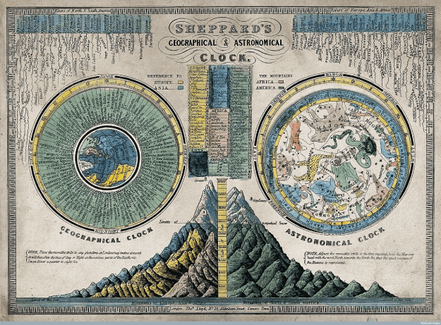
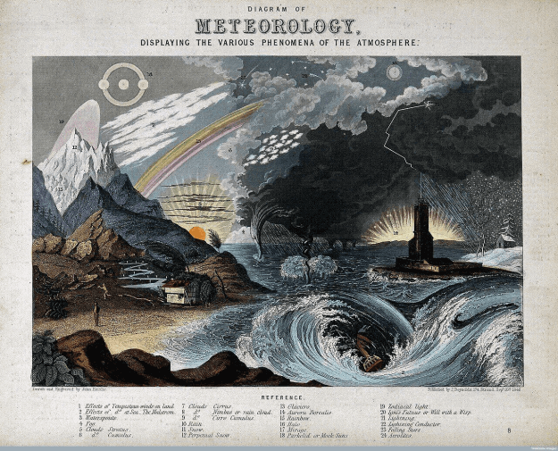
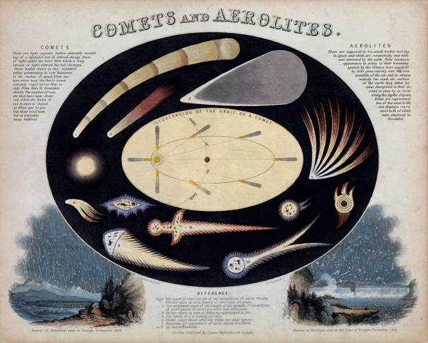
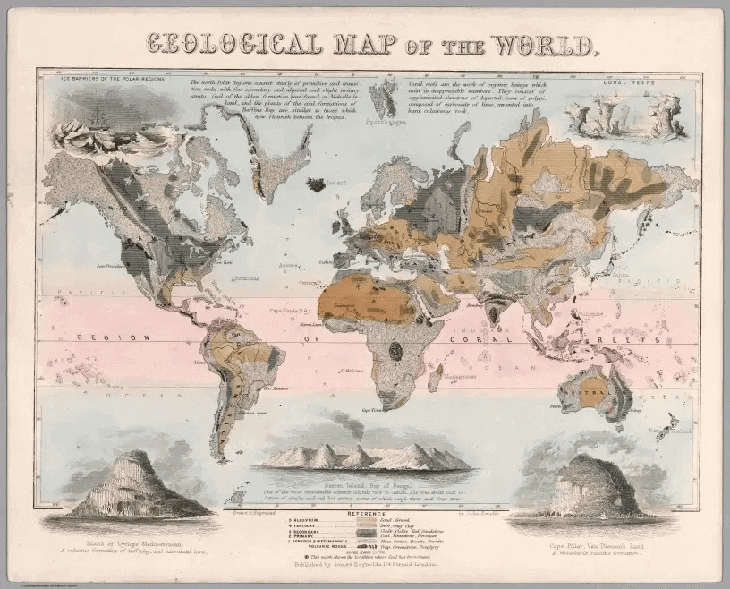

Las infografías nacen ante la necesidad de informar de manera visual diferentes temas, con el propósito de así poder llegar a más persona y que la información entregada, sea comprendida de manera clara y sencilla.
Su formato se ha ido transformando o con el paso del tiempo, dado que en sus comienzos las infografías eran usadas en papel de diarios de dos planas, posteriormente en revistas, hasta llegar a las tecnologías actuales. En el paso a la web, el lector de infografías se convierte en usuario al tener la capacidad de interactuar con la página web y la infografía.
John Philipps Emslie
El aporte de John Philipps Emslie fue uno de los esenciales del comienzo del las infografías en el siglo XIX.
Su trabajo se caracterizó por pintar y grabar a mano imágenes, gráficos o carteles para explicar los avances en las ciencias e ingeniería.
A pesar de la poca información de él, se puede rescatar que fue un artista topográfico que creo infografías sobre astronomía, geología y geografía durante los años 1850 hasta 1860, los cuales fueron publicados por James Reynolds. Además de centrarse en el folclore local de Inglaterra, donde tomo notas y realizo dibujos topográficos de la información reunida.
Su trabajo se caracterizó por pintar y grabar a mano imágenes, gráficos o carteles para explicar los avances en ciencias e ingeniería.

«Geography: Two Rotating Discs Showing the Hemispheres of the Earth» 1844.

«Meteorology» 1846.

«Shower of Aerolites seen in Europe» November,1836.

«Geological map of the world» 1852.
Luis Chumpitaz
Luis Chumpitaz es editor, artista gráfico y director de diseño de información con más de 14 años de experiencia en diversos proyectos comunicativos, con un papel mayor en la gestión de productos para libros e infografías. Nació en Perú y actualmente es residente en Dubai, por lo que trabaja con varios idiomas. Este hecho lo convierte en un reto al tener que crear información visual en inglés y árabe, donde la principal dificultad es que en inglés la lectura va de izquierda a derecha, pero en árabe va de derecha a izquierda.
Todos sus proyectos están basados en la "arquitectura de la información", en la que el primer paso es el diagnóstico y la comprensión de los contenidos, luego comienza una etapa de análisis donde se determina la participación del diseño, ya sea para la utilización infográfica u otros recursos visuales.
Además, es el ganador principal del 2009 a 2018 de premios de marketing e infografía de la Asociación Mundial de Periódicos (WAN) en los premios digitales de Asia y también es el ganador principal de 2006 a 2013 de los premios Malofiej Infographics y premios Society for News Design (SND).